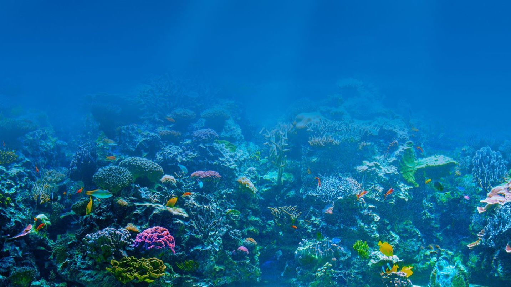
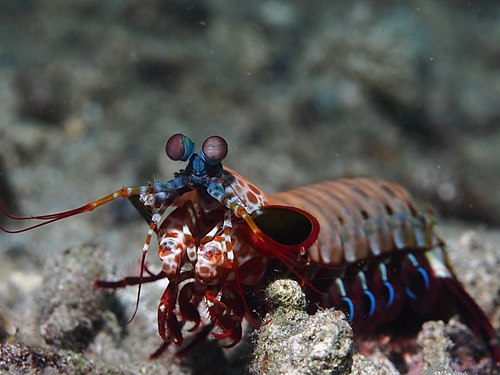

Fatos sobre o Stomatopoda
Sobre o animal
Nome científico: Odontodactylus scyllarus
Classificação
- Reino:
- Filo:
- Subfilo:
- Classe:
- Subclasse:
- Ordem:
Visão
Stomatopods têm a visão mais complexa do reino animal, até mesmo superior ao de borboletas.

Distribuição
O camarão mantis vive em águas tropicais e subtropicais em todo o mundo. A maioria das espécies vivem nos oceanos Índico e Pacífico.
Comportamento
Camarões Mantis são muito inteligentes. Eles reconhecer e lembrar outros indivíduos por visão eo cheiro, e eles demonstram uma capacidade de aprender.

Ciclo de reprodução e Vida
Em média, um camarão mantis vive 20 anos. Durante sua vida útil, pode produzir 20 a 30 vezes.

Dieta e caça
Para a maior parte, o camarão mantis é um caçador solitário, recluso.

Estado de conservação
Mais de 500 espécies de camarões mantis foram descritos, mas relativamente pouco se sabe sobre as criaturas, porque eles passam a maior parte de seu tempo em suas tocas.
